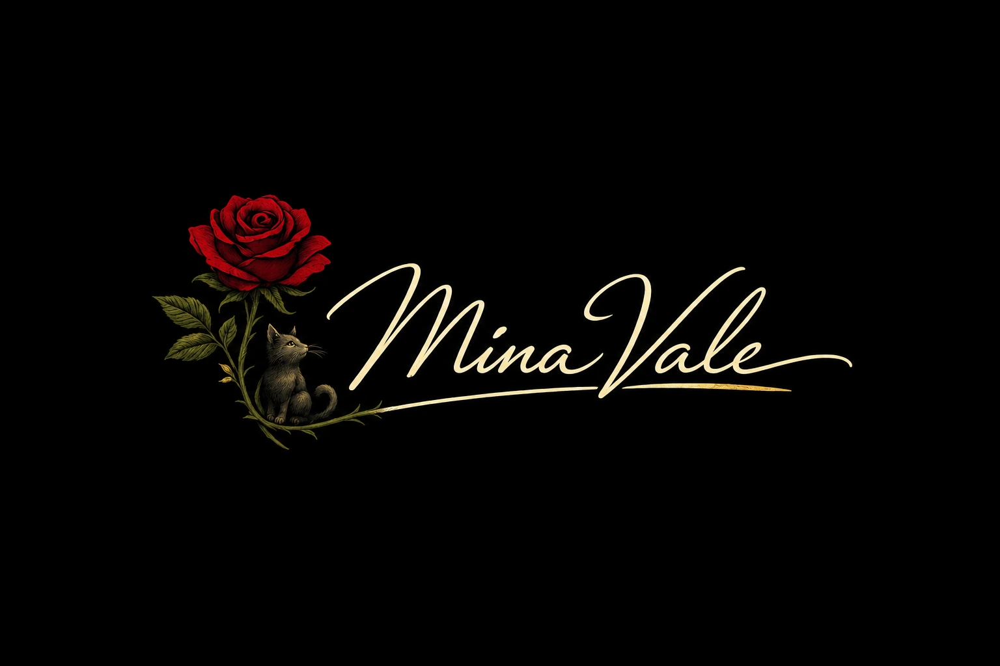

Gemeinschaftsprojekt

Rose & mystische KatzePersönliche Creative Signature · Konzeptfassung · V5.1.0
Mitgründerin · Autorin · Romanautorin
Mina Vale
Mina Vale erschafft emotionale Geschichten, in denen Liebe, Dunkelheit und Hoffnung aufeinandertreffen. Ihre Arbeit führt Leserinnen und Leser in Welten fernab des Alltäglichen – mit Figuren, mit denen man lachen, leiden und fühlen kann.
Rose und Katze bilden Minas persönliches Wiedererkennungszeichen. Die Darstellung ist als freigegebenes Konzeptbild gekennzeichnet; die Mikroanimation bewegt Schwanz und Blütenblätter dezent und wird bei reduzierter Bewegung automatisch deaktiviert.
Kreative Stimme
Welten für Herz und Fantasie
Mina Vale arbeitet besonders gern an Geschichten, Handlungen, Hintergründen und Orten. Ihre Schwerpunkte liegen in Fantasy, Dark Fantasy, Romance, Dark Romance und Historical Fiction.
Seit ihrem zehnten Lebensjahr beschäftigt sie sich kreativ mit Geschichten. Im Mittelpunkt stehen emotionale Reisen, Freundschaft, Liebe und Figuren, deren Erlebnisse lange nachwirken.
„Ich möchte, dass sich jeder Leser in eine Welt hineinversetzen kann, die fernab jeder Logik und Realität liegt. Ich möchte eine Reise gestalten, auf der jeder sein Herz ausschütten und mit den Charakteren lachen und weinen kann – über Freundschaft und Liebe.“
Kreative Schwerpunkte
Zwischen Gefühl und Dunkelheit
Beteiligte Projekte
Aktuelle Arbeit
Dark Romance · Einzelband
His Dark Obsession
AutorinFantasy-Reihe
Soulshard-Trilogie
Band 1: Zwischen Licht und Schatten · AutorinPersönlicher Leitsatz
„Auch wenn keiner an dich glaubt: Man kann nichts falsch machen. Jeder kann seine Wünsche erfüllen.“Studio-Leitsatz
物語で世界をつなぐ。Geschichten verbinden Welten.Kontakt
Anfragen über das Studio
Kontaktanfragen an Mina Vale erfolgen ausschließlich über die offiziellen Kontaktmöglichkeiten von Studio Tsukihashi.
E-Mail schreibenkontakt@studiotsukihashi.com
Dieses Profil enthält ausschließlich öffentlich freigegebene Angaben. Bürgerlicher Name, genauer Wohnort, private Kontaktdaten, Arbeitgeber, Beruf außerhalb des Studios sowie private Fotos und Familienangaben werden nicht veröffentlicht. Das Profil muss vor der Veröffentlichung noch einmal persönlich von Mina Vale geprüft werden.